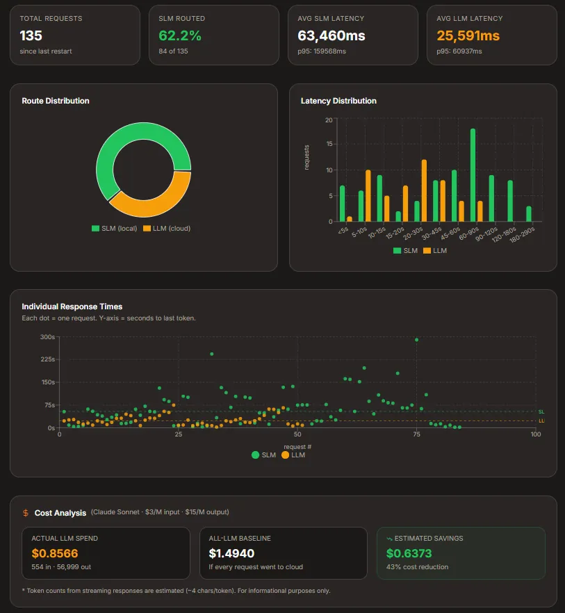

P / 01 · 2026
Intelligent SLM/LLM Router
A full-stack system that dynamically routes user prompts to the most suitable large language model or processing pipeline. A machine-learning classifier trained on labelled prompt data distinguishes simple from complex queries, while a continuous feedback loop refines routing accuracy over time. Backed by a containerised RESTful API and a responsive React/TypeScript frontend with real-time chat and analytics.
↗ view live